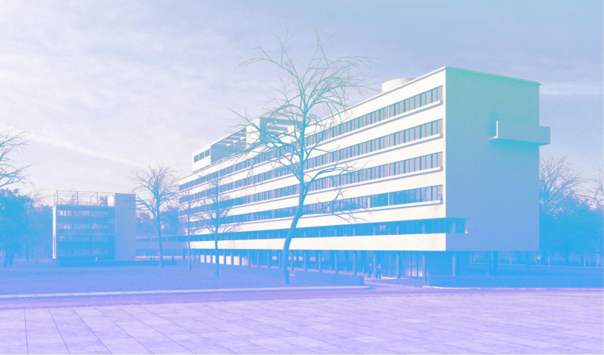

Дом Наркомфина
Дом Наркомфина — один из ключевых памятников жилой архитектуры конструктивизма, «опытный дом переходного типа». Построен в 1928—1930 годах по проекту архитекторов Моисея Гинзбурга, Игнатия Милиниса и инженера Сергея Прохорова для работников Народного комиссариата финансов СССР (Наркомфина). Находится в Москве по адресу: Новинский бульвар, дом 25, корпус 1.
Долгое время находился в аварийном состоянии, был трижды включён в список «100 главных зданий мира, которым грозит уничтожение». В 2017—2020 годах была произведена реставрация здания по проекту мастерской Алексея Гинзбурга, внука М. Я. Гинзбурга.
История создания
Дом Наркомфина, или 2-й дом Совнаркома РСФСР, стал одним из экспериментальных домов, построенных по результатам теоретических исследований Секции типизации Стройкома РСФСР, созданной по инициативе М. Я. Гинзбурга и под его руководством в 1928—1929 годы. Работе секции предшествовал конкурс на «эскизный проект жилого дома трудящихся», проведенный журналом «Современная архитектура» (Гинзбург подал на конкурс проект «Коммунального дома А-1»), выставка проектов конкурса в 1927 году, и строительство дома Госстраха на Малой Бронной (1926—1927, М. Я. Гинзбург и В. Н. Владимиров). И журнал, и конкурс, и работа Секции типизации были проектами ОСА (Объединения современных архитекторов).
Работа Секции типизации, подробно описанная М. Я. Гинзбургом в книге «Жилище», началась с анализа типологии «дореволюционного «доходного дома» и состояла в достижении максимально эффективных параметров использования объёма жилого пространства при сохранении его комфортности. Было разработано несколько типов квартир-ячеек, названных буквами от A до F. Результаты исследования секции М. Я. Гинзбург доложил на пленуме Стройкома РСФСР, где было принято постановление, рекомендовавшее несколько жилых ячеек к массовому строительству, а остальные — к опытно-показательному, начиная с 1928 года. Согласно этому постановлению было построено шесть «экспериментальных коммунальных домов переходного типа» в Москве, Свердловске и Саратове, причем в строительстве трех из них участвовал сам М. Я. Гинзбург. С. О. Хан-Магомедов называет дом Наркомата финансов самым интересным из этих шести домов.
Определённую роль в формулировании и решении проблемы создания жилого дома нового типа на примере дома Наркомата финансов сыграл Николай Милютин, известный как автор схем социалистического расселения и градостроительных концепций соцгорода, который в указанные годы (1924—1929) исполнял обязанности наркома финансов РСФСР и выступал в качестве заказчика жилого комплекса. По теории Милютина, отражавшей правительственную установку, «значительное повышение жизненного уровня рабочих и развитие обобществлённых форм обслуживания бытовых нужд трудящихся (общественное питание, ясли, детские сады, клубы и т. п.) постепенно уничтожают значение семьи как хозяйственного соединения. Этот процесс неизбежно приведёт, в конечном счёте, к полной переделке семейных форм общежития. <…> Задача раскрепощения женщины от мелкого домашнего хозяйства и вовлечение её в произодство заставляет нас ставить вопрос о всемерном содействии этому процессу». Задача реализации этих принципов и была поставлена перед авторами проекта. Согласно Екатерине Милютиной, это был дом «нового быта».
Сметная стоимость строительства составила 10 млн рублей. Строительство жилого корпуса осуществлялось под наблюдением комиссии, возглавляемой Н. А. Милютиным. Коммунальный корпус и корпус прачечной строились без утвержденных чертежей.
Идеология
Идеи, связанные с планировочной и объемной структурой, также как и с функциональным наполнением дома, изложены в книге М. Я. Гинзбурга «Жилище», где работе Секции типизации посвящена одна глава, а дому Наркомфина — три главы; идеология дома также была озвучена М. Я. Гинзбургом на пленуме Стройкома. Согласно М. Я. Гинзбургу, анализ типов жилья в доходном доме показывает, что его «экономический эффект» был более высоким, чем «массовое жилищное строительство Москвы первых лет после революции» (т. н. моссоветское строительство).
Работа Секции типизации шла по пути «урезывания и уплотнения обслуживающих площадей» взятой за прототип типологии доходного дома: вначале удалили вторые лестницы и комнаты домработниц, затем оптимизировали коридоры, передние, ванные комнаты и кухни, сохраняя объём и высоту жилых помещений и урезая как площадь, так и высоту подсобных. Приведенные в книге расчеты эффективности использования жилого пространства построены на рассмотрении отношения кубатуры к жилой площади квартир и параметра k (k=W/P, соотношение общей кубатуры здания к полезной площади жилых ячеек). М. Я. Гинзбург ссылается как на расчеты, так и на «опытную работу передовых архитекторов Запада».
Основной акцент архитекторы сделали на встроенную мебель и компактные сантехнические ячейки. Именно отсюда берёт начало практика совмещения ванной комнаты с туалетом, знакомая нескольким поколениям советских людей. «Они пытались сократить лишние движения обитателей квартир, а также считали необходимым предложить им питаться в общественных столовых, мыться в общественных банях, сдавать бельё в механические прачечные, читать и отдыхать в библиотеках и клубах».
Дом Наркомата финансов нередко называют «домом-коммуной», что неверно: автор проекта М. Я. Гинзбург противопоставлял свой «дом переходного типа» (от «буржуазного» дома к «социалистической» коммуне, поскольку в нём не полностью уничтожалась семейная структура, как это предполагалось в домах-коммунах) практике домов-коммун и жестко критиковал последнюю:
«…конвейер, по которому течет здесь нормированная жизнь, напоминает прусскую казарму <…> Нет нужды доказывать абстрактную утопичность и ошибочную социальную сущность всех этих проектов. <…> Нельзя не заметить во всей этой программе механического процесса увеличения до астрономических размеров молекулярных элементов бытового уклада старой семьи».
В предложениях секции Стройкома нет ни слова о навязывании фиксированного распорядка дня, практикуемого в домах-коммунах, даже в проектах общежитий, ни об уничтожении традиционного семейного уклада. Цель «способствовать быстрейшему безболезненному переходу к более высоким формам хозяйства» авторами дома Наркомфина также озвучивалась: именно для этого был запланирован развитый коммунальный блок с функциями общественного питания, стирки, уборки и присмотра за детьми — также как и минимальный размер кухонь в квартирах. Между тем М. Я. Гинзбург подчеркивает:
«мы сочли совершенно необходимым создание ряда моментов, стимулирующих переход на более высокую форму социально-бытового уклада, но не декретирующих этот переход»
Рассматривая дом Наркомфина как опытный, М. Я. Гинзбург не считал его типовым и настаивал на том, что создание типовых проектов жилых домов — путь неправильный, ведущий к «однообразию жилой застройки». Гинзбург считал важной «максимальную гибкость» стандартов и разработку таких стандартных элементов, «которые можно было бы всячески комбинировать <…> варьировать типы жилья, используя одни и те же стандартные элементы».
Архитектура
Состав жилого комплекса
В проектной документации дом именовался 2-м домом СНК. Согласно проекту, комплекс должен был состоять из четырёх корпусов:
- жилого, на 50 семей и приблизительно 200 человек. Построен.
- коммунального, соединенного с жилым теплым навесным переходом: с кухней, двумя столовыми — крытой внутри и летней на крыше, а также спортзалом и библиотекой. Построен, кухня работала в 1930-е годы, продавая еду на вынос. Столовая не заработала.
- отдельное здание детского сада с яслями планировалось на прямоугольной площадке между домом и коммунальным корпусом. Не реализовано. К 1934 году детский сад разместился в коммунальном корпусе, в помещениях столовой. Просуществовал до 1941 года.
- «служебный двор», включающий механическую прачечную, сушилку и гараж, был обращен к Новинскому бульвару. Реализован, прачечная функционировала (обслуживала жильцов в 1930-е годы).
Также планировалось, что рядом с домом Наркомфина будет построен второй жилой дом с большими квартирами — ячейками типа К или D. Не реализован.
Пространственная организация комплекса
Три основных объёма: жилого дома, коммунального корпуса и непостроенного детского сада, планировались как ритмически сбалансированный ансамбль разновеликих построек. Их уравновешивал корпус прачечной, перед которым со стороны Новинского бульвара планировалась организация квадратной площадки, композиционно связывающей этот корпус с городом. Жилой дом и корпус прачечной были частично подняты на колоннах, что освобождало пространство первого этажа (высотой 2,5 м) для прохода. По замыслу архитекторов, пройдя под корпусом прачечной через «парадный двор» перед входом с Новинского бульвара, по диагональной аллее можно было попасть в общественную зону комплекса или по другой аллее через жилой корпус в уровне открытого первого этажа — в парк за домом, где была организована своеобразная видовая площадка.
Архитектура жилого дома
Архитектура жилого корпуса была для конца 1920-х годов необычна и впечатляюща, особенно если учесть его старомосковское окружение[Комм. 2]. Жители ближайших районов прозвали его «домом-кораблем» («домом-пароходом» по Е. Милютиной) — впрочем, данный эпитет применяется ко многим модернистским зданиям. Авторам проекта Гинзбургу и Милинису удалось скомпоновать жилые ячейки в единый корпус настолько необычно, что это заинтересовало даже самого Ле Корбюзье, побывавшего в Доме Наркомфина и посетившего лично квартиру Николая Милютина.
В пояснительной записке к проекту М. Я. Гинзбург так объясняет появление открытого первого этажа: «Ввиду неровности участка, вызывающего в подобных случаях устройство большой поверхности цоколя, в настоящем случае дом поднят в большей своей части на высоту 2,5 метров на отдельных столбах, что является более экономичным и, кроме того, сохраняет нетронутой площадь парка».
В книге «Жилище» сказано лаконичнее: «Весь дом расположен в парке». Имеются в виду остатки «Шаляпинского» парка (см. выше), сохранившиеся части усадебных садов. Кроме того в 1937 году в парк вокруг дома Наркомфина пересадили деревья с реконструируемого Садового кольца, которое было залито асфальтом и снесена вся линия садов. Как следствие, одним из аргументов М. Я. Гинзбурга в пользу открытого первого этажа и «дома на ножках» стало «не разрезать домом территории парка».